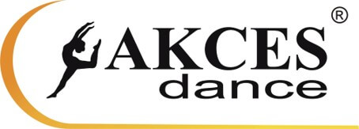
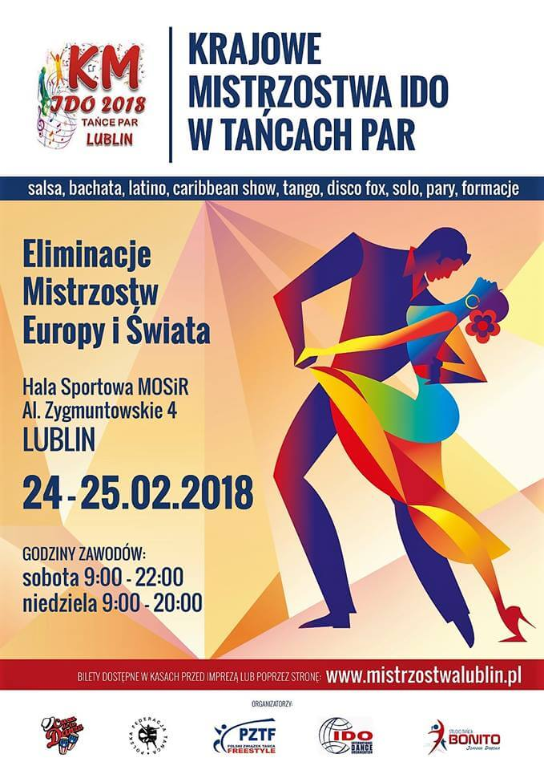
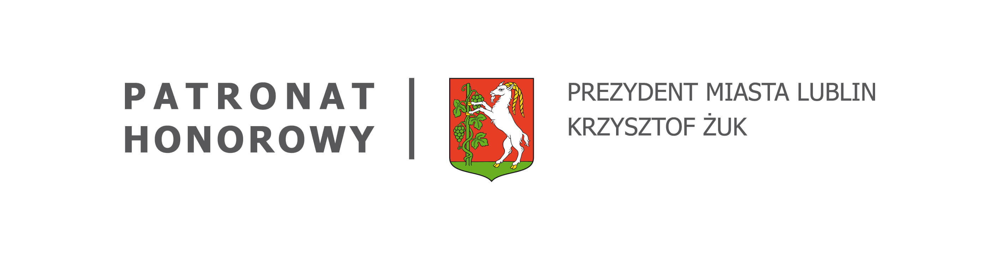
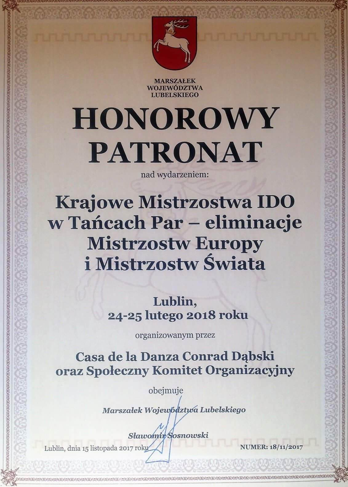
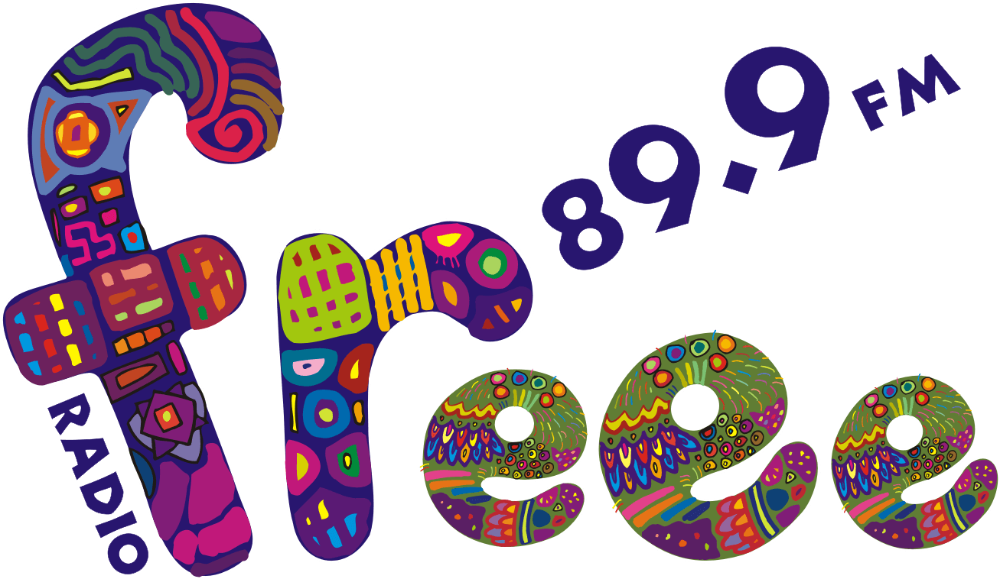

AKTUALNOŚCI
AKTUALNOŚCI
HOT NEWS !!!
Drodzy Tancerze, Trenerzy ...
mamy zamkniętą oficjalnie listę zgłoszeń,
padł nowy rekord ilości startujących w KM w Tańcach Par
- 830 zawodników z 35 klubów !
HOT SPORT: Krajowe Mistrzostwa IDO w Tańcach Par - Lublin 2018
Relacja z wizyty Lubelska.TV w Casa de la Danza
Super informacja dla tancerzy i kibiców ! Podczas naszych Mistrzostw będziecie mogli zakupić wspaniałe stroje do tańca, treningu, a także odebrać zakupione w sklepie online : www.sklep.justmove.pl przesyłki. Just Move jest oficjalnym partnerem obuwia tanecznego Akces Dance.
Przedstawiamy nasz oficjalny plakat Mistrzostw
Nasze Mistrzostwa zostały objęte Honorowym Patronatem :
Prezydenta Miasta Lublin - Krzysztofa Żuka


Marszałka Województwa Lubelskiego - Sławomira Sosnowskiego

Patronat medialny :



| Podział parkietu | |
| Salsa Shines solo female Junior 1/16 parkiet A | 8:00 – 9:00 |
| Salsa Shines solo female Children 1/16 parkiet B | |
| Salsa Shines solo male Junior 1/2 | 9:00 – 9:10 |
| Podział parkietu | 9:10 – 9:15 |
| Salsa Shines solo female Junior 1/8 | 9:15 – 9:55 |
| Salsa Shines solo female Children 1/8 | |
| Salsa Shines solo male Junior F | 9:55 – 10:00 |
| Podział parkietu | 10:00 – 10:05 |
| Salsa Shines solo female Junior 1/4 | 10:05 – 10:25 |
| Salsa Shines solo female Children 1/4 | |
| Salsa Shines solo male Children F | 10:25 – 10:30 |
| Podział parkietu | 10:30 – 10:30 |
| Salsa Shines solo female Junior 1/2 | 10:30 – 10:50 |
| Salsa Shines solo female Children 1/2 | |
| Caribbean Show solo male Children F | 10:50 – 10:55 |
| Caribbean Show solo male Junior F | 10:55 – 11:10 |
| Salsa Shines solo female Children F | 11:10 – 11:25 |
| Rozdanie nagród (5 kategorii) | 11:25 – 11:50 |
| Caribbean Show solo female Children 1/4 | 11:50 – 12:05 |
| Caribbean Show solo female Junior 1/4 | 12:05 – 12:30 |
| Caribbean Show solo female Children 1/2 | 12:30 – 12:40 |
| Caribbean Show solo female Junior 1/2 | 12:40 – 12:50 |
| Caribbean Show solo female Children F | 12:50 – 13:00 |
| Caribbean Show duo Junior 1/2 | 13:00 – 13:15 |
| Merengue Couple Children F | 13:15 – 13:35 |
| Salsa Couple Children F | 13:35 – 13:50 |
| Salsa Couple Junior 1/2 | 13:50 – 13:55 |
| Latin Show formations MiniKids F | 13:55 – 14:15 |
| Bachata Couple Junior 1/2 | 14:15 – 14:25 |
| Bachata Couple Children F | 14:25 – 14:35 |
| Losowanie kolejności startu formacji | 14:35 – 14:40 |
| Salsa Shines duo Junior 1/4 | 14:40 – 14:55 |
| Rozdanie nagród (4 kategorii) | 14:55 – 15:10 |
| Salsa Shines duo Junior 1/2 | 15:10 – 15:20 |
| Salsa Shines duo Children F | 15:20 – 15:35 |
| Salsa Shines duo Junior F | 15:35 – 15:50 |
| Synchro Dancing small group Children F | 15:50 – 16:00 |
| Synchro Dancing formations Children F | 16:00 – 16:10 |
| Rozdanie nagród (4 kategorii) | 16:10 – 16:30 |
| Caribbean Show duo Children F | 16:30 – 16:40 |
| Merengue Couple Junior F | 16:40 – 16:50 |
| Latin Show formations Children F | 16:50 – 17:00 |
| Caribbean Show Formations Children F | 17:00 – 17:15 |
| Bachata coupe Junior F | 17:15 – 17:25 |
| Caribbean Show small group Children F | 17:25 – 17:40 |
| Rozdanie nagród (6 kategorii) | 17:40 – 17:55 |
| Couple Dance Master Showcase F | 18:15 – 18:25 |
| Salsa Couple Junior F | 18:25 – 18:45 |
| Caribbean Show small group Adult 1 F | 18:45 – 18:55 |
| Losowanie kolejności startu formacji | 18:55 – 19:00 |
| Salsa Shines solo female Junior F | 19:00 – 19:15 |
| Bachata Couple Adult 1 1/2 | 19:15 – 19:30 |
| Caribbean Show formations Adults 2 F | 19:30 – 19:55 |
| Bachata Couple Adults F | 19:55 – 20:10 |
| Caribbean Show solo female Junior F | 20:10 – 20:25 |
| Couple Dance formations Adult 1 F | 20:25 – 20:45 |
| Rozdanie nagród (8 kategorii) | 20:40 – 20:55 |
| Caribbean Show duo Junior F | 20:55 – 21:10 |
| Salsa Shines solo male Adult 1 + Adult 2 F | 21:10 – 21:30 |
| Caribbean Show formations Adult 1 F | 21:30 – 22:00 |
| Rozdanie nagród (3 kategorii) | 22:00 – 22:15 |
| Salsa Shines solo female Adult 1 1/8 | 9:00 – 9:30 |
| Salsa rueda de Casino Junior F | 9:30 – 9:40 |
| Salsa Shines solo female Adult 1 1/4 | 9:40 – 10:00 |
| Jitterburg Adult 1 F | 10:00 – 10:05 |
| Disco Fox slow/fast Adult 2 F | 10:05 – 10:20 |
| Salsa Shines solo female Adult 1 1/2 | 10:20 – 10:40 |
| Disco Fox Show Adult 2 F | 10:40 – 10:55 |
| Caribbean Show small group Junior F | 10:55 – 11:10 |
| Salsa Shines solo female Adult 1 F | 11:10 – 11:25 |
| Rozdanie nagród (6 kategorii) | 11:25 – 11:40 |
| Disco Fox slow/fast Adult 1 1/2 | 11:40 – 11:50 |
| Synchro Dancing small group Adult 1 F | 11:50 – 12:05 |
| Discofox Adult 1 slow/fast F | 12:05 – 12:10 |
| Caribbean Show solo female Adult 1 1/8 | 12:10 – 12:20 |
| Synchro Dancing formations Junior F | 12:20 – 12:25 |
| Caribbean Show solo female Adult 1 1/4 | 12:25 – 13:00 |
| Discofox Show Adult 1 F | 13:00 – 13:10 |
| Couple Dance formations Junior F | 13:10 – 13:20 |
| Caribbean Show solo female Adult 1 1/2 | 13:20 – 13:45 |
| Caribbean Show formations Junior 1/2 | 13:45 – 14:10 |
| Caribbean Show solo female Adult 1 F | 14:10 – 14:25 |
| Caribbean Show formations Junior F | 14:25 – 14:40 |
| Rozdanie nagród (6 kategorii) | 14:40 – 15:00 |
| Caribbean Show small group Adult 2 F | 15:00 – 15:15 |
| Salsa Couple Adult 1 1/2 | 15:15 – 15:30 |
| Synchro Dancing small group Adult 2 F | 15:30 – 15:35 |
| Salsa Couple Adult 1 F | 15:35 – 15:50 |
| Latin Show formations Junior F | 15:50 – 16:00 |
| Salsa Shines duo Adult 1 F | 16:00 – 16:20 |
| Salsa rueda de Casino Adult 1 F | 16:20 – 16:30 |
| Caribbean Show duo Adult 1 1/2 | 16:30 – 16:50 |
| Latin Show small group Junior F | 16:50 – 16:55 |
| Caribbean Show duo Adult 1 F | 16:55 – 17:10 |
| Rozdanie nagród (7 kategorii) | 17:10 – 17:30 |
| Synchro Dancing formations Adult 1 F | 17:30 – 17:50 |
| Latin Show solo female Junior F | 17:50 – 17:55 |
| Caribbean Show solo male Adult 1 F | 17:55 – 18:10 |
| Synchro Dancing small group Junior F | 18:10 – 18:30 |
| Rozdanie nagród (4 kategorii) | 18:30 – 18:50 |